Candidate List 20260919Last night — ZTF: 2,656 passed basic cuts (50 young) · LSST: 0 passed basic cuts (0 young)Previous Day Next Day
Section 1: New Sources (age<1d) Section 2: Old (1-5d) sources observed last nightplaceholder
Section 1: New Afterglow/FBOT Cands Last Night (1)
1. [ZTF] ZTF26abwafvw (FBOT?) [Back to Top] [Share] [Trigger Swift] [Fritz Alert] [Fritz Source] [Lasair]RA, Dec: 273.95735, 42.77599 18h15m49.76s, 42d46m33.55sGalactic (l, b): 70.24161, 24.25288 ext(g-r) = 0.04


TESS: Sectors [ 26 40 52 53 54 74 79 81 119]
PS1: 0 sources in 3 arcsec
LegacySurvey: 1 sources in 3 arcsec Closest: d = 0.69 arcsec, 314.9 deg (east of north) photoz=0.96 (68% bounds 0.76, 1.16), type=REX peak abs mag (ext. corrected) = -24.82 (68% bounds -24.2, -25.32)

Extinction-corrected gr color:
From alerts: -0.28 +/- 0.19 mag
Rise Rate:
g: 1.06 mag/day
r: 0.77 mag/day
Fade Rate:
Section 2: Older Sources Observed Last Night (10)
0. [ZTF] ZTF26abuktjp (Afterglow?) [Back to Top] [Share] [Trigger Swift] [Fritz Alert] [Fritz Source] [Lasair]RA, Dec: 312.71175, 64.34756 20h50m50.82s, 64d20m51.20sGalactic (l, b): 100.29855, 12.66549 ext(g-r) = 0.55


TESS: Sectors [ 15 17 18 24 56 57 58 76 77 78 83 84 85 121]
PS1: 1 source in 3 arcsec Closest: d = 3.55 arcsec photoz=0.04+/-0.03 peak abs mag = -19.15
LegacySurvey: 0 sources in 3 arcsec

Extinction-corrected gr color:
From alerts: -0.01 +/- 0.22 mag
Consistent with synchrotron, g-r>0!
Rise Rate:
r: 0.18 mag/day
Fade Rate:
g: 0.3 mag/day
1. [ZTF] ZTF26abuzses (FBOT?) [Back to Top] [Share] [Trigger Swift] [Fritz Alert] [Fritz Source] [Lasair]RA, Dec: 26.69177, 12.86013 1h46m46.03s, 12d51m36.47sGalactic (l, b): 143.24279, -47.81771 WARNING: 1.72 deg from ecliptic plane ext(g-r) = 0.059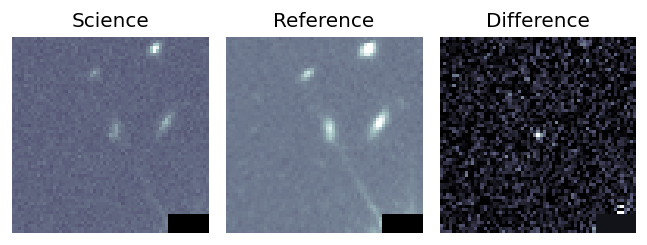
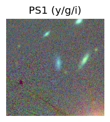
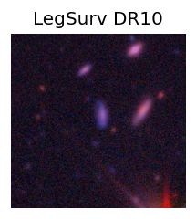
TESS: Sectors [42 43 70]
SDSS (<15 kpc):Found SDSS phot-z: z=0.20; peak abs mag = -19.92
PS1: 0 sources in 3 arcsec
LegacySurvey: 1 sources in 3 arcsec Closest: d = 2.58 arcsec, 321.1 deg (east of north) photoz=0.13 (68% bounds 0.11, 0.15), type=SER peak abs mag (ext. corrected) = -18.81 (68% bounds -18.36, -19.24)
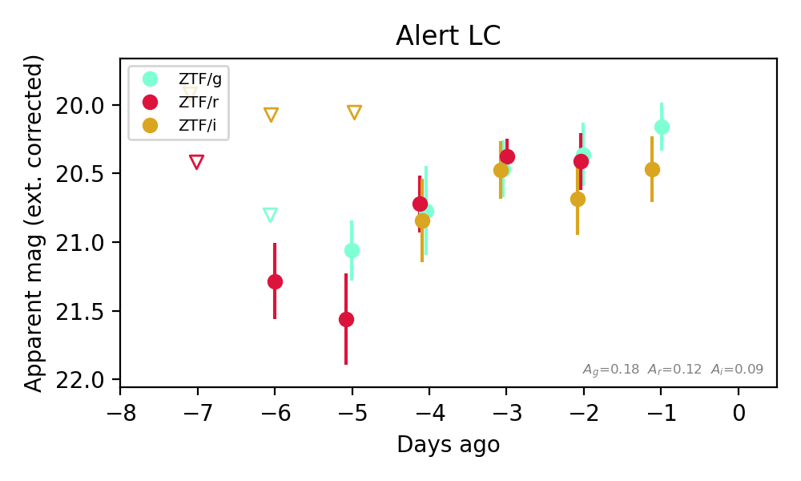
Extinction-corrected gr color:
From alerts: -0.05 +/- 0.31 mag
Extinction-corrected gi color:
From alerts: -0.31 +/- 0.3 mag
Extinction-corrected ri color:
From alerts: -0.27 +/- 0.34 mag
Consistent with synchrotron, g-r>0!
Rise Rate:
g: 0.22 mag/day
r: 0.29 mag/day
Fade Rate:
2. [ZTF] ZTF26abvcyoo (FBOT?) [Back to Top] [Share] [Trigger Swift] [Fritz Alert] [Fritz Source] [Lasair]RA, Dec: 73.08491, 5.15068 4h52m20.38s, 5d 9m2.44sGalactic (l, b): 193.47362, -23.53051 ext(g-r) = 0.098


TESS: Sectors [ 5 32 98 110]
NED host (10 arcsec):Found CGCG 420-010 (G, 5.4″); NED spec-z: z=0.0298 [zflag S1L]; peak abs mag = -18.29
PS1: 0 sources in 3 arcsec
LegacySurvey: 1 sources in 3 arcsec Closest: d = 1.55 arcsec, 41.2 deg (east of north) photoz=0.08 (68% bounds 0.06, 0.12), type=SER peak abs mag (ext. corrected) = -20.5 (68% bounds -19.86, -21.37)

Extinction-corrected gr color:
From alerts: -0.29 +/- 0.06 mag
Extinction-corrected gi color:
From alerts: -0.47 +/- 0.07 mag
Extinction-corrected ri color:
From alerts: -0.19 +/- 0.07 mag
Rise Rate:
g: 0.98 mag/day
r: 0.39 mag/day
i: 0.29 mag/day
Fade Rate:
3. [ZTF] ZTF26abuxdll (Afterglow?) [Back to Top] [Share] [Trigger Swift] [Fritz Alert] [Fritz Source] [Lasair]RA, Dec: 294.36855, 41.01744 19h37m28.45s, 41d 1m2.78sGalactic (l, b): 74.37197, 9.51329 ext(g-r) = 0.182


TESS: Sectors [ 14 15 40 41 54 55 74 75 81 82 119 120]
PS1: 0 sources in 3 arcsec
LegacySurvey: 0 sources in 3 arcsec

Extinction-corrected gr color:
From alerts: 0.25 +/- 0.15 mag
Consistent with synchrotron, g-r>0!
Rise Rate:
r: 0.66 mag/day
Fade Rate:
g: 0.08 mag/day
4. [ZTF] ZTF26abvdlgm (FBOT?) [Back to Top] [Share] [Trigger Swift] [Fritz Alert] [Fritz Source] [Lasair]RA, Dec: 298.32958, 0.3879 19h53m19.10s, 0d23m16.43sGalactic (l, b): 40.4769, -13.5503 ext(g-r) = 0.2


TESS: Sectors [54 81]
SDSS (<15 kpc):Found SDSS phot-z: z=0.18; peak abs mag = -20.80
PS1: 0 sources in 3 arcsec
LegacySurvey: 0 sources in 3 arcsec

Extinction-corrected gr color:
From alerts: -0.14 +/- 0.23 mag
Extinction-corrected gi color:
From alerts: -0.18 +/- 0.3 mag
Extinction-corrected ri color:
From alerts: -0.2 +/- 0.3 mag
Consistent with synchrotron, g-r>0!
Rise Rate:
g: 0.22 mag/day
r: 0.3 mag/day
i: 0.23 mag/day
Fade Rate:
5. [ZTF] ZTF26abvdwrk (Afterglow?) [Back to Top] [Share] [Trigger Swift] [Fritz Alert] [Fritz Source] [Lasair]RA, Dec: 302.08273, 50.6744 20h 8m19.85s, 50d40m27.83sGalactic (l, b): 85.56495, 9.61516 ext(g-r) = 0.21


TESS: Sectors [ 14 15 16 41 54 55 56 75 76 81 83 120 121]
PS1: 1 source in 3 arcsec Closest: d = 6.61 arcsec photoz=0.35+/-0.11 peak abs mag = -23.41
LegacySurvey: 0 sources in 3 arcsec

Extinction-corrected gr color:
From alerts: 0.11 +/- 0.11 mag
Consistent with synchrotron, g-r>0!
Rise Rate:
r: 0.58 mag/day
Fade Rate:
6. [ZTF] ZTF26abvkwka (FBOT?) [Back to Top] [Share] [Trigger Swift] [Fritz Alert] [Fritz Source] [Lasair]RA, Dec: 136.03671, 6.63985 9h 4m8.81s, 6d38m23.48sGalactic (l, b): 222.8219, 32.44478 ext(g-r) = 0.057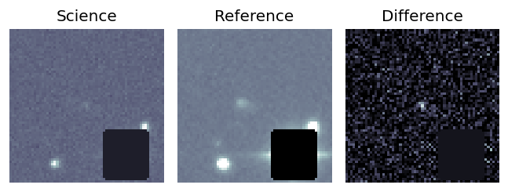
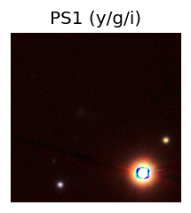
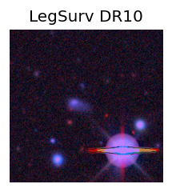
TESS: Sectors [ 8 34 44 45 46 61 72 88]
SDSS (<15 kpc):Found SDSS phot-z: z=0.08; peak abs mag = -19.57
PS1: 0 sources in 3 arcsec
LegacySurvey: 1 sources in 3 arcsec Closest: d = 5.54 arcsec, 77.0 deg (east of north) photoz=0.04 (68% bounds 0.02, 0.08), type=SER peak abs mag (ext. corrected) = -18.07 (68% bounds -16.39, -19.56)
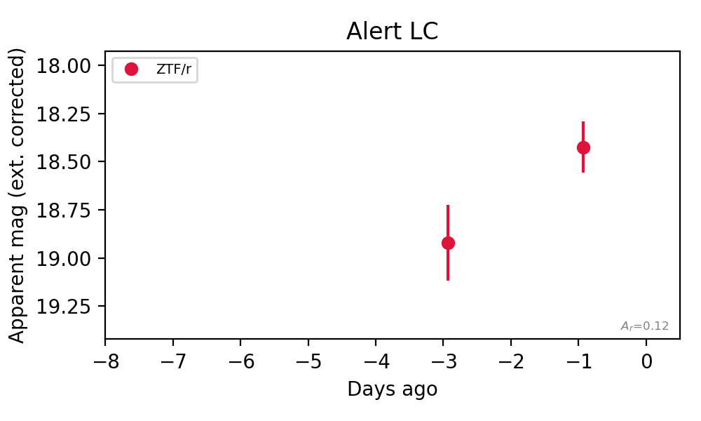
Rise Rate:
r: 0.25 mag/day
Fade Rate:
7. [ZTF] ZTF26abvsjaq (Afterglow?) [Back to Top] [Share] [Trigger Swift] [Fritz Alert] [Fritz Source] [Lasair]RA, Dec: 290.87907, 43.98264 19h23m30.98s, 43d58m57.51sGalactic (l, b): 75.90561, 13.13884 ext(g-r) = 0.122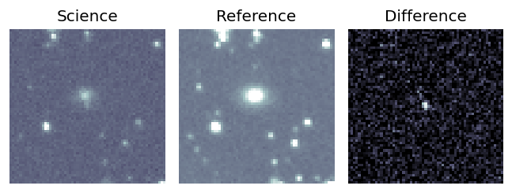
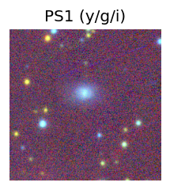

TESS: Sectors [ 14 15 40 41 54 74 75 80 81 82 119 120]
PS1: 1 source in 3 arcsec Closest: d = 4.28 arcsec photoz=0.11+/-0.02 peak abs mag = -19.04
LegacySurvey: 0 sources in 3 arcsec
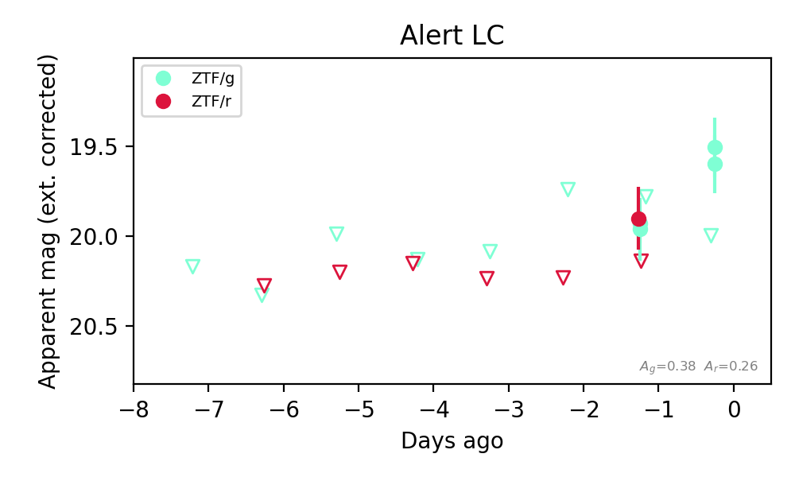
Extinction-corrected gr color:
From alerts: 0.04 +/- 0.2 mag
Consistent with synchrotron, g-r>0!
Rise Rate:
g: 8.99 mag/day
r: 0.08 mag/day
Fade Rate:
8. [ZTF] ZTF26abvweoi (FBOT?) [Back to Top] [Share] [Trigger Swift] [Fritz Alert] [Fritz Source] [Lasair]RA, Dec: 24.16112, 8.7014 1h36m38.67s, 8d42m5.04sGalactic (l, b): 141.50147, -52.53282 WARNING: -1.27 deg from ecliptic plane ext(g-r) = 0.062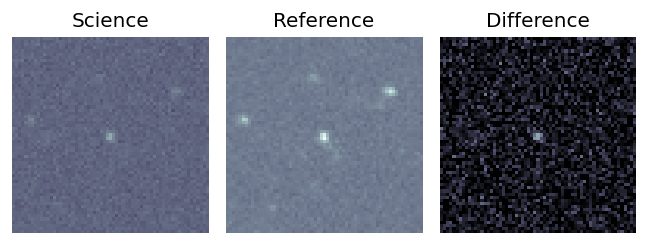
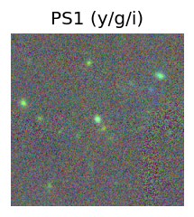
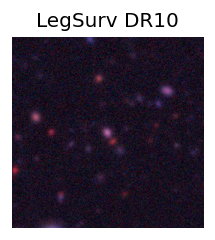
TESS: Sectors [42 43 70]
SDSS (<15 kpc):Found SDSS phot-z: z=0.27; peak abs mag = -20.56
PS1: 0 sources in 3 arcsec
LegacySurvey: 1 sources in 3 arcsec Closest: d = 0.33 arcsec, 131.4 deg (east of north) photoz=0.13 (68% bounds 0.1, 0.17), type=REX peak abs mag (ext. corrected) = -18.83 (68% bounds -18.3, -19.52)
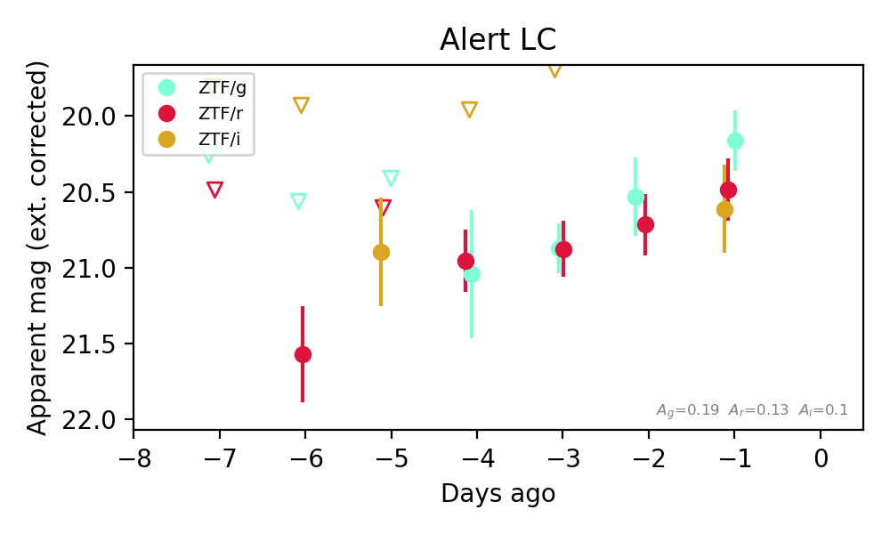
Extinction-corrected gr color:
From alerts: -0.32 +/- 0.29 mag
Extinction-corrected gi color:
From alerts: -0.45 +/- 0.35 mag
Extinction-corrected ri color:
From alerts: -0.13 +/- 0.35 mag
Consistent with synchrotron, g-r>0!
Rise Rate:
g: 0.33 mag/day
r: 0.19 mag/day
Fade Rate:
9. [ZTF] ZTF26abvzduc (Afterglow?) [Back to Top] [Share] [Trigger Swift] [Fritz Alert] [Fritz Source] [Lasair]RA, Dec: 37.30396, 24.5315 2h29m12.95s, 24d31m53.40sGalactic (l, b): 149.67335, -33.21314 ext(g-r) = 0.124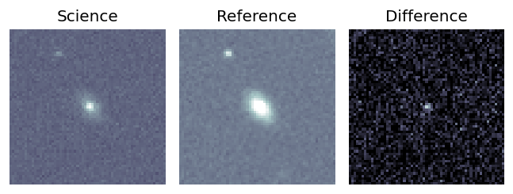
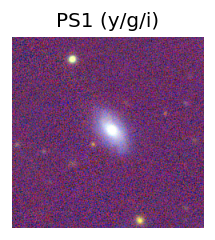
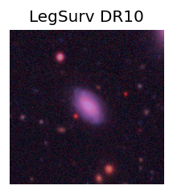
TESS: Sectors [18 42 43 44 58 70 71 85]
SDSS (<15 kpc):Found SDSS phot-z: z=0.12; peak abs mag = -18.64
NED photo-z only: WISEA J022912.89+243153.6 (G, 0.8″) z=0.0828 [zflag PUN] — not used for peak abs mag
PS1: 0 sources in 3 arcsec
LegacySurvey: 1 sources in 3 arcsec Closest: d = 0.84 arcsec, 290.5 deg (east of north) photoz=0.11 (68% bounds 0.09, 0.12), type=SER peak abs mag (ext. corrected) = -18.44 (68% bounds -18.01, -18.67)
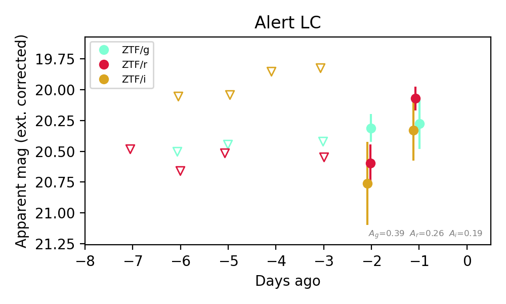
Extinction-corrected gr color:
From alerts: 0.2 +/- 0.23 mag
Extinction-corrected gi color:
From alerts: -0.05 +/- 0.32 mag
Extinction-corrected ri color:
From alerts: -0.26 +/- 0.26 mag
Consistent with synchrotron, g-r>0!
Rise Rate:
r: 0.56 mag/day
Fade Rate: